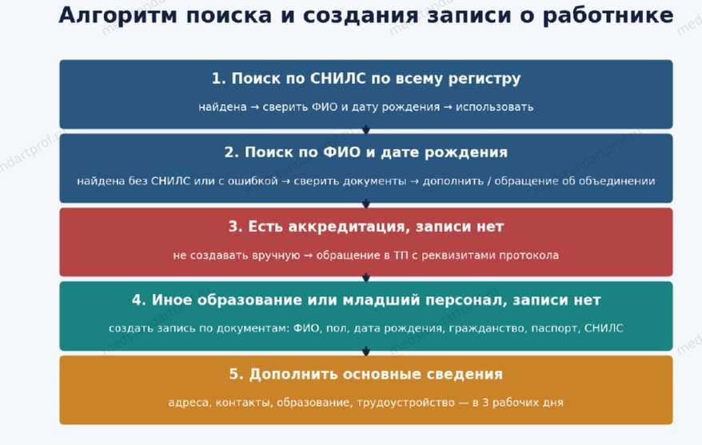
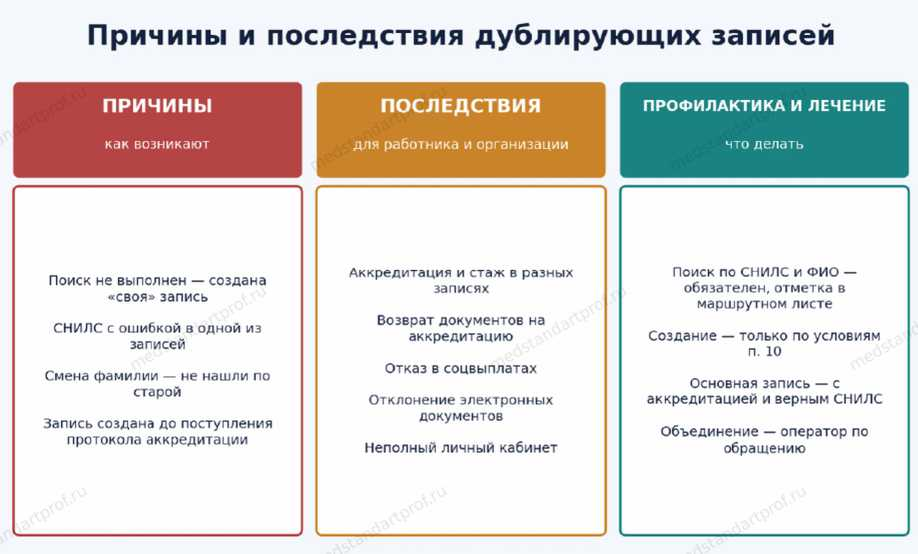
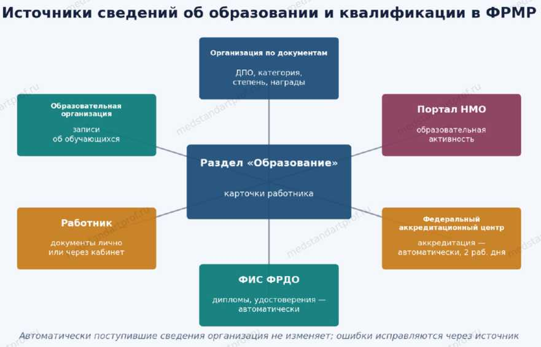
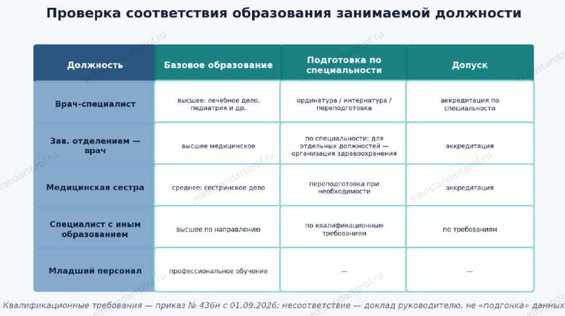
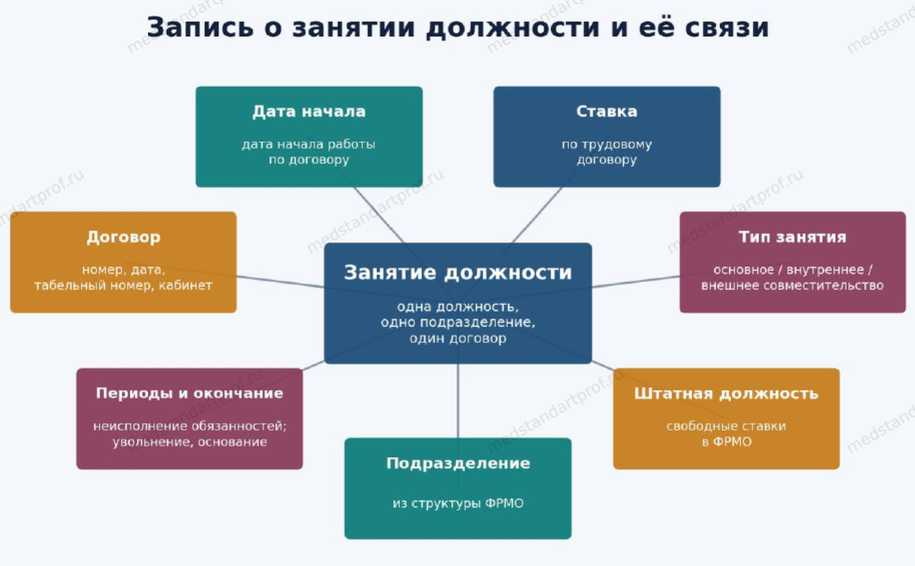
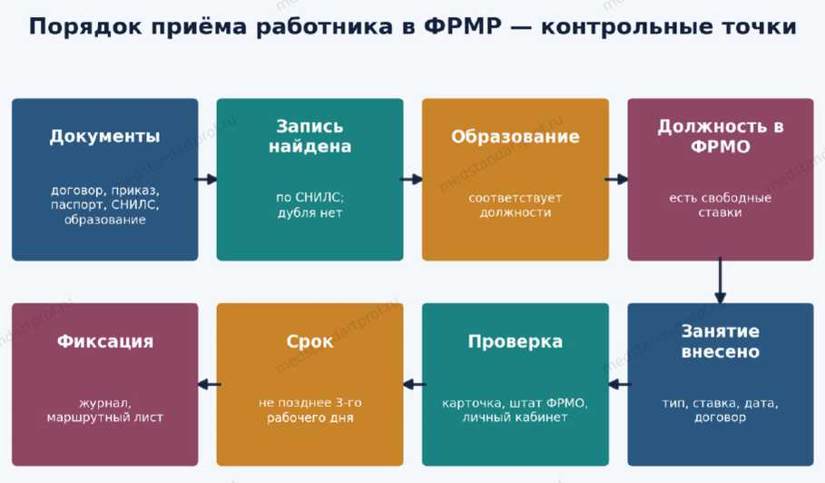

Карточка работника в ФРМР — персонифицированная запись, которая сопровождает медицинского работника на протяжении всей профессиональной жизни независимо от места работы. Организация не «заводит своего сотрудника», а находит его запись и дополняет её сведениями о трудоустройстве. Понимание этого принципа предотвращает самую разрушительную ошибку регистра — создание дублирующих карточек, из-за которых сведения об аккредитации, образовании и стаже оказываются разорванными между записями.
Цель лекции — освоить порядок поиска существующей записи о работнике, условия и порядок создания новой записи, состав персональных данных и документов, а также механизмы защиты от дублирования.
Порядок № 708н устанавливает, что первичное внесение записи о медицинском или фармацевтическом работнике осуществляется автоматически на основании протокола аккредитационной комиссии (пункт 9), а об обучающемся — по данным федеральной информационной системы обеспечения проведения государственной итоговой аттестации и приёма (пункт 11). При первичном внесении формируется уникальный номер реестровой записи и личный кабинет (пункт 13). Уполномоченное лицо организации создаёт запись самостоятельно только для работников, запись о которых не может быть создана автоматически: работников с иным (немедицинским) образованием, допущенных к медицинской деятельности, и младшего медицинского персонала (пункт 10).
Следствия для организации:
• врач или средний медицинский работник, прошедший аккредитацию (первичную, первичную специализированную или периодическую), уже имеет запись в регистре; её нужно найти;
• выпускник медицинской образовательной организации, обучавшийся после 2022-2023 годов, имеет запись, созданную образовательной организацией;
• работник, ранее работавший в другой организации, имеет запись с историей трудоустройства;
• записи создаются организацией только в исключительных случаях, и перед созданием обязателен поиск.

Рисунок 1. Алгоритм поиска и создания записи о работнике
Основной ключ — СНИЛС. Поиск выполняется по всему регистру, а не только среди работников организации. Дополнительные ключи — фамилия, имя, отчество и дата рождения; номер реестровой записи (если известен работнику из личного кабинета); данные документа, удостоверяющего личность.
1. Ввести СНИЛС из документа работника (сверив с оригиналом; при расхождении СНИЛС в разных документах — уточнить в Социальном фонде через работника).
2. Если запись найдена — открыть её, сверить фамилию, имя, отчество, дату рождения с документами. При совпадении — использовать эту запись. При несовпадении фамилии (смена фамилии) при совпадении остальных данных — использовать запись, актуализировав фамилию по документу (лекция 8.1).
3. Если по СНИЛС запись не найдена — выполнить поиск по фамилии, имени, отчеству и дате рождения: возможно, запись создана без СНИЛС или с ошибкой в нём. При обнаружении — сверить документ, удостоверяющий личность, и сведения об образовании; при уверенности в совпадении — дополнить запись верным СНИЛС (если это допускает интерфейс) либо направить обращение в техническую поддержку об объединении.
4. Если запись не найдена ни одним способом, а работник имеет аккредитацию — проверить выписку из ЕГИСЗ о прохождении аккредитации (работник получает её на портале государственных услуг). Наличие аккредитации при отсутствии записи означает сбой передачи протокола; создавать запись вручную в этом случае не следует — направляется обращение в техническую поддержку с указанием реквизитов протокола аккредитации.
5. Если работник не имеет аккредитации и относится к категориям, для которых запись создаёт организация (иное образование, младший персонал), — создать запись.
Иностранные граждане, не имеющие СНИЛС на момент приёма, оформляют его через работодателя в Социальном фонде (обязанность работодателя при первом трудоустройстве). До получения СНИЛС создание записи и внесение сведений о трудоустройстве может быть затруднено; регламент должен предусматривать первоочередное оформление СНИЛС при приёме таких работников, чтобы уложиться в нормативный срок.
Запись создаётся организацией, если одновременно:
• поиск по всем ключам не дал результата;
• работник относится к категории, для которой автоматическое создание не предусмотрено, либо техническая поддержка подтвердила необходимость ручного создания.
По пункту 12 Порядка № 708н при первичном внесении вносятся:
|
Поле |
Правило заполнения |
Документ |
|
Фамилия, имя, отчество |
Точно по документу, удостоверяющему личность; буква «ё» — как в документе |
Паспорт |
|
Пол |
По документу |
Паспорт |
|
Дата рождения |
По документу |
Паспорт |
|
Гражданство |
Из справочника стран; при двойном гражданстве — по правилам интерфейса |
Паспорт, документы иностранного гражданина |
|
Документ, удостоверяющий личность |
Вид (паспорт гражданина РФ, паспорт иностранного гражданина, вид на жительство и другие), серия, номер, дата выдачи, кем выдан, код подразделения |
Документ |
|
СНИЛС |
11 цифр, проверка контрольного числа выполняется системой |
Документ, подтверждающий регистрацию в системе индивидуального учёта |
|
Сведения о прохождении аккредитации |
Не заполняются при ручном создании для лиц без аккредитации |
— |
Место рождения, адреса регистрации и проживания (через государственный адресный реестр), контактные данные, сведения об образовании (лекция 7.2), сведения о трудоустройстве (лекция 7.3).
Порядок № 708н устанавливает, что сведения вносятся на основании первичных документов кадрового учёта и документов, представляемых работником лично (пункты 10, 14, 17). При приёме кадровая служба запрашивает и снимает копии:
• документа, удостоверяющего личность;
• документа, подтверждающего регистрацию в системе индивидуального (персонифицированного) учёта (СНИЛС);
• документов об образовании и о квалификации (диплом, приложение; документы о послевузовском образовании; удостоверения о повышении квалификации, дипломы о переподготовке);
• выписки о прохождении аккредитации (сертификата специалиста — при наличии действующего);
• документов о квалификационной категории, учёной степени, звании, наградах (при наличии);
• документов иностранного гражданина (разрешение на работу, патент, вид на жительство — при необходимости);
• для лиц, сменивших фамилию, — документа о перемене имени (свидетельство о браке и другие).
Копии заверяются и хранятся в личном деле; сведения из них вносятся в регистр. Работник знакомится с уведомлением о внесении его данных в ФРМР.
Пункт 22 Порядка № 708н требует форматно-логического контроля, предотвращающего дублирующие записи, по: фамилии, имени, отчеству, дате и месту рождения; данным документа, удостоверяющего личность; датам трудоустройства и адресу места работы; сведениям об образовании (номера документов, сертификатов, аккредитации, договора о целевом обучении); СНИЛС. Система блокирует создание записи с уже существующим СНИЛС и предупреждает о совпадениях по иным признакам.
• Уполномоченное лицо не выполнило поиск и создало запись «своего» работника, в то время как запись существовала (с ошибкой в СНИЛС или без него).
• Запись создана до автоматического поступления протокола аккредитации, затем поступил протокол и создал вторую запись (если система не сопоставила по СНИЛС из-за ошибки).
• Работник сменил фамилию; организация не нашла запись по старой фамилии и создала новую.
• СНИЛС введён с ошибкой в одной из записей.
При дублировании сведения об аккредитации оказываются в одной записи, о трудоустройстве — в другой; личный кабинет работника показывает неполные данные; периодическая аккредитация возвращается из-за отсутствия стажа; электронные документы подписываются от «неполной» записи. Объединение записей выполняет оператор по обращению организации (или работника) с приложением подтверждающих документов; процедура занимает время и требует последующей проверки всех сведений.
1. Поиск по СНИЛС и по ФИО с датой рождения — обязателен и фиксируется в маршрутном листе.
2. Создание записи — только при выполнении условий раздела 3.1.
3. Ввод СНИЛС — с документа, с проверкой контрольного числа (выполняется системой).
4. При смене фамилии — сначала поиск по СНИЛС, затем актуализация фамилии.
5. Ежемесячная сверка: работники, у которых в организации две записи, — сигнал дубля.

Рисунок 2. Причины и последствия дублирующих записей
Персональные данные вносятся посимвольно по документу. Типичные ошибки: латинская буква вместо кириллической, «е» вместо «ё», пробелы в двойных фамилиях, дата выдачи паспорта вместо даты рождения, код подразделения без дефиса. Ошибка в персональных данных приводит к несовпадению с данными ЕСИА работника — он не сможет войти в личный кабинет либо увидит чужую (пустую) запись — и к отклонению электронных документов, в которых сведения о враче сопоставляются с регистром.
Актуализация персональных данных выполняется в трёхдневный срок по документу работника (пункты 17, 23 Порядка); подробнее — в лекции 8.1.
Запись о медицинском работнике в ФРМР едина на всю профессиональную жизнь и создаётся, как правило, автоматически по протоколу аккредитации или образовательной организацией; организация находит запись по СНИЛС и дополняет её. Ручное создание допускается только для работников с иным образованием и младшего персонала после безрезультатного поиска по всем ключам. Персональные данные вносятся посимвольно по документам, а форматно-логический контроль и обязательный поиск перед созданием защищают регистр от дублей — ошибки, последствия которой затрагивают аккредитацию, выплаты и электронные документы работника.
1. Приказ Минздрава России от 28.10.2022 № 708н «Об утверждении порядка ведения персонифицированного учета...», пункты 9-13, 17, 22, 23.
2. Федеральный закон от 21.11.2011 № 323-ФЗ, статьи 69 (право на осуществление медицинской деятельности, аккредитация), 93.
3. Федеральный закон от 01.04.1996 № 27-ФЗ «Об индивидуальном (персонифицированном) учете в системах обязательного пенсионного страхования и обязательного социального страхования» (с последующими изменениями и дополнениями).
4. Трудовой кодекс Российской Федерации, статьи 65 (документы при приёме), 86-88.
5. Приказ Минздрава России от 28.10.2022 № 709н «Об утверждении Положения об аккредитации специалистов» (с последующими изменениями и дополнениями).
6. Руководство пользователя ФРМР. — URL: portal.egisz.rosminzdrav.ru.
7. Чек-лист 3 курса «Карточка работника».
Раздел «Образование» карточки работника подтверждает его право на осуществление медицинской деятельности по конкретной специальности и на конкретной должности. Именно этот раздел проверяют лицензирующий орган (соответствие квалификации работников лицензионным требованиям), аккредитационные комиссии (при периодической аккредитации) и органы управления здравоохранением (при расчёте потребности в подготовке кадров). Часть сведений поступает в раздел автоматически из внешних систем, часть вносит организация.
Цель лекции — освоить состав сведений об образовании и квалификации в ФРМР, источники их поступления, правила внесения организацией и порядок актуализации.
1. Структура раздела
|
Подраздел |
Содержание |
Кто вносит |
|
Базовое профессиональное образование |
Уровень (среднее профессиональное, высшее — специалитет, бакалавриат, магистратура), специальность и квалификация по диплому, образовательная организация, реквизиты диплома, год окончания |
Автоматически из федерального реестра сведений о документах об образовании (ФИС ФРДО) при наличии; организация — по документу |
|
Послевузовское (подготовка кадров высшей квалификации) |
Интернатура, ординатура, аспирантура: специальность, организация, реквизиты документа, годы |
Автоматически / организация |
|
Дополнительное профессиональное образование |
Повышение квалификации (программа, объём часов, организация, реквизиты удостоверения), профессиональная переподготовка (специальность, организация, реквизиты диплома) |
Организация по документу; сведения о повышении квалификации, учтённые на портале непрерывного образования, — автоматически |
|
Сертификат специалиста |
Специальность, номер, дата выдачи, срок действия, организация |
Организация по документу (для действующих сертификатов); справочно |
|
Аккредитация специалиста |
Вид (первичная, первичная специализированная, периодическая), специальность, дата, номер протокола, срок действия |
Автоматически из федерального аккредитационного центра |
|
Допуск по результатам экзамена |
Для лиц со средним образованием, допущенных к деятельности по результатам экзамена в установленных случаях |
Организация по документу |
|
Квалификационная категория |
Специальность, категория (вторая, первая, высшая), дата присвоения, орган |
Организация по документу |
|
Учёная степень, учёное звание |
Степень, отрасль науки, реквизиты диплома; звание |
Организация по документу |
|
Награды, почётные звания |
Вид, дата, реквизиты |
Организация по документу |
|
Членство в профессиональных некоммерческих организациях |
Наименование организации, дата вступления |
Организация по документу работника |

Рисунок 1. Источники сведений об образовании и квалификации в ФРМР
Федеральный реестр сведений о документах об образовании и (или) о квалификации, документах об обучении (ведётся Рособрнадзором) содержит сведения о дипломах и удостоверениях, выданных с установленных дат. Порядок № 708н (пункт 19) предусматривает актуализацию сведений об образовании по данным этого реестра через межведомственное взаимодействие при наличии технической возможности. Если сведения о документе поступили автоматически, организация их не изменяет; при расхождении с документом работника (ошибка в реестре образовательной организации) работник обращается в образовательную организацию для исправления.
Сведения об аккредитации поступают из подсистемы аккредитации на основании протокола аккредитационной комиссии в течение двух рабочих дней (пункты 9, 18). Организация не может внести или изменить сведения об аккредитации вручную. Подтверждением для работника служит выписка о прохождении аккредитации, формируемая в единой системе и доступная на портале государственных услуг; свидетельство об аккредитации на бумажном носителе с 2021 года не выдаётся.
Сведения об образовательной активности (освоенные программы повышения квалификации, образовательные мероприятия, интерактивные модули) учитываются на портале и используются при периодической аккредитации. Порядок № 708н (пункт 17) выделяет сведения об образовании, полученные и подтверждённые на портале, исключая из ручной актуализации организацией повышение квалификации и переподготовку, учтённые там. На практике организация вносит сведения о ДПО по документам работника в части, не отражённой автоматически, в соответствии с правилами интерфейса.
1. Основание — документ. Сведения вносятся по оригиналу (заверенной копии) документа об образовании; реквизиты (серия, номер, регистрационный номер, дата) — посимвольно.
2. Специальность — из справочника. Специальность по диплому выбирается из справочника специальностей высшего и среднего образования; специальность ДПО и категории — из номенклатуры специальностей (с 01.09.2026 — приказ № 43 5н). Для дипломов, выданных по прежним классификаторам, выбирается соответствующая позиция по таблицам соответствия.
3. Организация, выдавшая документ, — из справочника образовательных организаций; при отсутствии (ликвидированная, зарубежная организация) — по правилам интерфейса (свободный ввод или обращение о дополнении справочника).
4. Полнота. Вносятся все документы, подтверждающие право работника на занятие должности: базовое образование, послевузовское образование по специальности, переподготовка (если специальность получена через переподготовку), последнее повышение квалификации по специальности, категория. Устаревшие удостоверения о повышении квалификации (старше пяти лет) вносить не требуется, если это не предусмотрено правилами реестра.
5. Сертификаты. Сертификаты специалиста выдавались до 1 января 2021 года на пять лет; к настоящему времени их сроки истекли, и допуск подтверждается аккредитацией. Сведения об истёкших сертификатах хранятся в истории; новые сертификаты не вносятся.
6. Сроки. Сведения об образовании вносятся при приёме одновременно со сведениями о трудоустройстве; новые документы (удостоверение о повышении квалификации, приказ о категории) — в течение трёх рабочих дней со дня представления работником.
При внесении сведений о трудоустройстве система и проверяющие органы сопоставляют образование работника с требованиями к должности (квалификационные требования — приказ № 436н с 01.09.2026; профессиональные стандарты). Уполномоченное лицо перед внесением занятия должности проверяет:__________________________________________
|
Должность |
Что должно быть в разделе «Образование» |
|
Врач- специалист |
Высшее образование по специальности «Лечебное дело», «Педиатрия» и другие; ординатура (интернатура) или переподготовка по специальности должности; аккредитация по специальности |
|
Заведующий отделением — врач-специалист |
То же, что для врача-специалиста; для отдельных должностей — дополнительная подготовка по организации здравоохранения |
|
Медицинская сестра (по видам) |
Среднее образование по специальности «Сестринское дело» (или иной по требованиям); переподготовка при необходимости; аккредитация по специальности |
|
Фельдшер |
Среднее образование «Лечебное дело»; аккредитация |
|
Специалист с высшим немедицинским образованием (биолог, медицинский психолог) |
Высшее образование по соответствующему направлению; допуск в соответствии с квалификационными требованиями |
|
Младший медицинский персонал |
Профессиональное обучение по должности (санитар, младшая медицинская сестра) в соответствии с профессиональным стандартом |
Несоответствие (например, врач-терапевт занимает должность врача-кардиолога без переподготовки и аккредитации по кардиологии) — нарушение лицензионных требований, видимое по данным регистра. Уполномоченное лицо не вправе «подгонять» сведения об образовании; расхождение доводится до руководителя и кадровой службы.

Рисунок 2. Проверка соответствия образования занимаемой должности
Категории присваиваются аттестационными комиссиями (органов управления здравоохранением субъектов, федеральных ведомств, Минздрава России) в порядке, установленном приказом Минздрава России от 22.11.2021 № 1083н, на пять лет. В регистр вносятся: специальность, категория, дата присвоения (приказ), орган. Истечение срока категории 5 отслеживается для целей оплаты труда и аттестации; в регистре категория с истёкшим сроком переходит в историю. Сведения о категории могут поступать из региональных систем аттестации автоматически.
Для образовательных организаций Порядок № 708н предусматривает внесение сведений об обучающихся (пункт 3): уровень и специальность образования, организация, форма и источник финансирования, период обучения, целевое обучение. Медицинская организация, принимающая обучающегося на должность среднего медицинского персонала (допуск по результатам экзамена для студентов старших курсов) или на должность младшего персонала, находит его запись, созданную образовательной организацией, и дополняет сведениями о трудоустройстве. Договор о целевом обучении, заключённый с медицинской организацией, отражается в записи обучающегося; при трудоустройстве выпускника по целевому договору это позволяет контролировать исполнение обязательств.
Работник через личный кабинет видит раздел «Образование» и сведения об аккредитации. При отсутствии сведений о пройденном повышении квалификации или категории работник представляет документы в организацию (либо загружает через кабинет, если функция доступна), а организация вносит их в трёхдневный срок. Перед периодической аккредитацией работнику рекомендуется проверить полноту сведений об образовании и трудоустройстве в кабинете, поскольку портфолио формируется на их основе; регламент организации предусматривает напоминание работникам за шесть месяцев до окончания срока аккредитации.
• Не внесено послевузовское образование (ординатура) — врач числится без права на специальность.
• Переподготовка внесена как повышение квалификации, и наоборот.
• Специальность по диплому выбрана «похожая» вместо соответствующей по таблицам соответствия.
• Внесён сертификат с истёкшим сроком как действующий документ допуска.
• Категория внесена без специальности или с неверной датой (дата заявления вместо даты приказа).
• Организация пытается вручную внести аккредитацию, которая не поступила автоматически, вместо обращения в техническую поддержку.
Раздел «Образование» ФРМР объединяет сведения из трёх источников — федерального реестра документов об образовании, федерального аккредитационного центра и портала непрерывного образования — с документами, вносимыми организацией: базовое и послевузовское образование, ДПО, категории, степени, награды, членство. Организация вносит сведения строго по документам, специальности выбирает из справочников (с 01.09.2026 — приказ № 43 5н), не изменяет автоматически поступившие данные и проверяет соответствие образования занимаемой должности по квалификационным требованиям (приказ № 436н). Полнота раздела определяет право работника на должность, результат периодической аккредитации и корректность лицензионного контроля.
1. Приказ Минздрава России от 28.10.2022 № 708н «Об утверждении порядка ведения персонифицированного учета...», пункты 2, 3, 9, 17-19.
2. Федеральный закон от 21.11.2011 № 323-ФЗ, статья 69.
3. Приказ Минздрава России от 28.10.2022 № 709н «Об утверждении Положения об аккредитации специалистов» (с последующими изменениями и дополнениями).
4. Приказ Минздрава России от 14.05.2026 № 43 5н «Об утверждении Номенклатуры специальностей...»; приказ от 14.05.2026 № 43 6н «Об утверждении квалификационных требований...» (применяются с 01.09.2026).
5. Приказ Минздрава России от 22.11.2021 № 1083н «О порядке и сроках прохождения медицинскими работниками и фармацевтическими работниками аттестации для получения квалификационной категории» (с последующими изменениями и дополнениями).
6. Федеральный закон от 29.12.2012 № 273-ФЗ «Об образовании в Российской Федерации», статья 98 (ФИС ФРДО); постановление Правительства Российской Федерации от 31.05.2021 № 825.
7. Портал непрерывного медицинского и фармацевтического образования. — URL: edu.rosminzdrav.ru.
8. Руководство пользователя ФРМР. — URL:
portal.egisz.rosminzdrav.ru.
Сведения о трудоустройстве — центральная часть карточки работника с точки зрения организации: именно они связывают человека с организацией, подразделением и должностью, определяют укомплектованность, право подписи электронных документов, участие в расписании, основания для социальных выплат. Порядок № 708н отводит на внесение этих сведений три рабочих дня со дня заключения трудового договора. Лекция описывает состав сведений о занятии должности, правила их заполнения для разных видов занятости и порядок действий при приёме.
Цель лекции — освоить состав и правила внесения сведений о трудоустройстве работника в ФРМР при приёме на работу, включая совместительство, и связь этих сведений со штатным расписанием ФРМО.
В ФРМР сведения о трудоустройстве представлены записями о занятии должности. Одна запись — одно занятие одной штатной должности одного подразделения по одному трудовому договору. У работника может быть несколько одновременных занятий: основное место и внутреннее совместительство в другом подразделении; работа в двух организациях (основное место в одной, внешнее совместительство в другой — каждая организация вносит своё занятие). История занятий сохраняется: закрытые занятия остаются в карточке с датами.
Порядок № 708н (пункт 21) относит к сведениям о трудоустройстве: наименование организации, занимаемую должность, дату начала трудоустройства, тип занятия должности, ставку, дату окончания трудоустройства, основание окончания, причину увольнения, причины и даты временного неисполнения обязанностей. Эти сведения вносятся уполномоченными лицами через реестр организаций и регистр работников и отражаются в карточке.
2. Состав сведений о занятии должности
|
Поле |
Содержание |
Источник |
Правило |
|
Организация |
Определяется автоматически по полномочиям уполномоченного лица |
||
|
Структурное подразделение |
Из структуры ФРМО |
Приказ о приёме, трудовой договор |
Подразделение, указанное в приказе |
|
Штатная должность |
Из штатного расписания подразделения в ФРМО |
Приказ, трудовой договор |
Должна существовать с незанятой ставкой |
|
Тип занятия должности |
Основное место работы; внутреннее совместительство; внешнее совместительство |
Трудовой договор |
Совмещение (статья 60.2 ТК) не является занятием должности и, как правило, не вносится, если правила реестра не предусматривают иное |
|
Ставка |
Доля ставки: 0,25; 0,5; 0,75; 1,0; 1,25; 1,5 и другие |
Трудовой договор |
Для совместителей — не более 0,5 ставки по каждому договору (статья 284 ТК), с исключениями для медицинских работников по постановлению Минтруда России от 30.06.2003 №41 |
|
Дата начала трудоустройства |
Дата начала работы по трудовому договору |
Трудовой договор, приказ |
Не дата издания приказа, а дата начала работы |
|
Номер и дата трудового договора |
Реквизиты |
Трудовой договор |
Точно по документу |
|
Табельный номер |
По кадровому учёту |
Учётная система |
При наличии поля |
|
Кабинет (рабочее место) |
Элемент структуры уровня кабинета |
Фактическое размещение |
При наличии поля; используется для расписания |
|
Признаки |
Работа в сельской местности, участковый принцип, участие в ОМС, целевое обучение (при наличии полей) |
Документы |
По правилам интерфейса |
|
Испытательный срок, срочность договора |
При наличии полей |
Договор |
— |

Рисунок 1. Запись о занятии должности и её связи
1. Запись работника найдена (лекция 7.1); персональные данные сверены.
2. Образование соответствует должности (лекция 7.2); при несоответствии — доклад руководителю до внесения.
3. Штатная должность существует в нужном подразделении ФРМО и имеет незанятые ставки в достаточном объёме. Если должности нет — инициируется внесение изменений в штатное расписание (приказ) и в ФРМО; если ставки заняты — проверяется, не числится ли по ней уволенный работник.
4. Документы получены: трудовой договор, приказ о приёме, документы работника.
1. Открыть карточку работника, раздел трудоустройства, добавить занятие должности.
2. Выбрать подразделение, штатную должность.
3. Указать тип занятия, ставку, дату начала, реквизиты договора, табельный номер, кабинет, признаки.
4. Сохранить; при ошибке форматно-логического контроля — прочитать сообщение (типичные: ставка превышает свободные штатные ставки; дата начала раньше даты создания должности; у работника уже есть основное место работы в другой организации при указании типа «основное место»).
5. Проверить в карточке отображение занятия и в штатном расписании ФРМО — уменьшение свободных ставок.
6. Зафиксировать в журнале и маршрутном листе.
Не позднее трёх рабочих дней со дня заключения трудового договора (пункт 14 Порядка). Если договор заключён в пятницу, срок истекает в среду (при отсутствии праздничных дней). Регламент организации устанавливает передачу документов уполномоченному лицу в день издания приказа.
Оформляется отдельным трудовым договором; в ФРМР создаётся отдельное занятие должности в соответствующем подразделении с типом «внутреннее совместительство» и своей ставкой. Основное занятие не изменяется.
Работник имеет основное место работы в другой организации. Организация-совместитель вносит занятие с типом «внешнее совместительство». Запись о работнике одна; в ней видны занятия в обеих организациях (в объёме, доступном по полномочиям). Если система сообщает, что у работника уже есть основное место работы, при том что работник утверждает обратное, — вероятно, прежняя организация не закрыла занятие при увольнении; работник обращается в прежнюю организацию либо в техническую поддержку.
Выполнение дополнительной работы по другой должности в течение рабочего дня (статья 60.2 ТК) не является отдельным трудовым договором и, по общему правилу, не отражается как занятие должности. Если правила реестра или региональные акты требуют учёта совмещения (например, для расчёта нагрузки), оно вносится по установленным правилам с признаком «совмещение».
Занимает должность «заведующий отделением — врач-специалист» (единая должность из номенклатуры). Если штатным расписанием предусмотрена дополнительно ставка врача-специалиста, которую заведующий занимает по внутреннему совместительству, — вносится второе занятие.
Занимает ту же штатную должность; ставка временно отсутствующего (в отпуске по уходу за ребёнком) сохраняется занятой, если в ФРМР отражено временное неисполнение обязанностей без закрытия занятия (лекция 8.1), — тогда суммарная занятость может превысить штатные ставки, и правила реестра предусматривают для этого признак замещения либо требуют учитывать такие случаи по инструкции оператора. Уполномоченное лицо действует по действующему руководству пользователя и фиксирует решение в журнале.
Вносятся на общих основаниях после получения СНИЛС; дополнительно указываются документы, подтверждающие право на работу, если поля предусмотрены. Признание образования, полученного за рубежом, и допуск подтверждаются документами, предусмотренными статьёй 69 Федерального закона № 323-ФЗ.
При приёме выпускника, обучавшегося по договору о целевом обучении с организацией, признак целевого обучения отражается в записи (сведения могут быть внесены образовательной организацией); организация проверяет их наличие — это подтверждает исполнение обязательств сторон.
Лица, привлечённые по гражданско-правовым договорам, не занимают штатных должностей и не вносятся как занятие должности. Медицинская деятельность по таким договорам имеет ограничения; вопрос допустимости решается юридической службой.
После внесения занятия уполномоченное лицо проверяет:
• в карточке работника — занятие отображается с верными подразделением, должностью, ставкой, датой;
• в штатном расписании ФРМО — занятые ставки по должности увеличились на внесённую долю;
• работник (через личный кабинет) видит трудоустройство — по возможности, в течение первой недели;
• если работник должен подписывать электронные документы или вести приём — служба информационных технологий проверяет доступность его в медицинской информационной системе и федеральной электронной регистратуре после синхронизации.

Рисунок 2. Порядок приёма работника в ФРМР — контрольные точки
• Занятие внесено на должность в неверном подразделении («ближайшем», где были свободные ставки).
• Ставка указана по табелю или фактической нагрузке, а не по трудовому договору.
• Дата начала — дата приказа или дата внесения, а не дата начала работы по договору.
• Тип занятия «основное место» для внешнего совместителя.
• Совместительство внесено изменением ставки основного занятия (1,0 —► 1,5) вместо отдельного занятия.
• Занятие внесено до внесения сведений об образовании, что вызывает сигналы о несоответствии квалификации.
• Срок трёх рабочих дней исчислен от даты передачи документов, а не от даты договора.
Приём работника отражается в ФРМР записью о занятии штатной должности с указанием подразделения, должности, типа занятия, ставки, даты начала и реквизитов договора — строго по трудовому договору и приказу, не позднее трёх рабочих дней со дня заключения договора. Совместительство оформляется отдельными занятиями; совмещение занятием не является. Перед внесением проверяются наличие записи работника, соответствие образования должности и наличие свободных ставок; после внесения — отражение в карточке, штатном расписании и личном кабинете работника.
1. Приказ Минздрава России от 28.10.2022 № 708н «Об утверждении порядка ведения персонифицированного учета...», пункты 14, 21-23.
2. Трудовой кодекс Российской Федерации, статьи 57, 60.1, 60.2, 61, 67, 68, 282-284.
3. Постановление Минтруда России от 30.06.2003 № 41 «Об особенностях работы по совместительству педагогических, медицинских, фармацевтических работников и работников культуры».
4. Федеральный закон от 21.11.2011 № 323-ФЗ, статья 69.
5. Приказ Минздрава России от 14.05.2026 № 436н «Об утверждении квалификационных требований...» (применяется с 01.09.2026).
6. Руководство пользователя ФРМР. — URL: portal.egisz.rosminzdrav.ru.
7. Шаблон 4 курса «Маршрутный лист кадрового события»; Чек-лист 4 «Кадровое событие».
Практикум отрабатывает полный цикл внесения сведений о принятом работнике в ФРМР на трёх типовых сценариях: врач, прошедший аккредитацию; медицинская сестра с истёкшим сертификатом и периодической аккредитацией; санитар без медицинского образования. Каждый сценарий — пошаговая инструкция с контрольными точками и типовыми ошибками. Наименования полей — по руководству пользователя.
Цель практикума — научиться безошибочно выполнять приём работника в ФРМР: поиск записи, проверка и дополнение персональных данных и образования, внесение занятия должности, контроль результата, фиксация в документах.
Форма выполнения — в реальной среде на фактических приёмах текущего месяца (с соблюдением требований к персональным данным) либо на учебных сценариях с заполнением рабочих карточек.
Общий алгоритм
|
Шаг |
Действие |
Контрольная точка |
|
1 |
Получить от кадровой службы маршрутный лист с документами: договор, приказ, паспорт, СНИЛС, документы об образовании, выписка об аккредитации |
Комплект полный; дата договора зафиксирована — от неё считается срок |
|
2 |
Выполнить поиск записи по СНИЛС по всему регистру; при отсутствии — по ФИО и дате рождения |
Результат поиска отмечен в маршрутном листе |
|
3 |
Открыть найденную запись; сверить ФИО, дату рождения, документ |
Совпадение; при смене фамилии — актуализация по документу |
|
4 |
Проверить раздел «Образование»: базовое, послевузовское, ДПО, аккредитация; дополнить по документам |
Образование соответствует должности |
|
5 |
Убедиться, что в ФРМО есть штатная должность в нужном подразделении со свободными ставками |
Есть; иначе — инициировать ФРМО |
|
6 |
Добавить занятие должности: подразделение, должность, тип занятия, ставка, дата начала, договор, табельный номер, кабинет |
Сохранено без ошибок контроля |
|
7 |
Проверить отражение в карточке и в штатном расписании ФРМО |
Занятые ставки увеличились |
|
8 |
Зафиксировать в журнале и маршрутном листе; передать работнику памятку о личном кабинете |
Записи сделаны |
Исходные данные. Иванова Мария Петровна, 1996 г. р., диплом по специальности «Лечебное дело» (2020), ординатура по терапии (2022), первичная специализированная аккредитация по терапии (2022), работала в другой поликлинике (уволена 31.08 текущего года). Принята на должность врача-терапевта участкового в терапевтическое отделение поликлиники на 1,0 ставки, основное место, трудовой договор № 45 от 01.09, начало работы 01.09.
Ожидаемая ситуация в регистре. Запись существует (создана по протоколу аккредитации); в ней — образование (диплом, ординатура из ФИС ФРДО), аккредитация (из ФАЦ), закрытое занятие в прежней поликлинике.
Действия.
1. Поиск по СНИЛС — запись найдена. Сверка ФИО и даты рождения — совпадают.
2. Раздел «Образование»: диплом и ординатура присутствуют; аккредитация по терапии присутствует; проверить наличие удостоверения о повышении квалификации за последние пять лет (при наличии документа — внести).
3. Раздел «Трудоустройство»: прежнее занятие закрыто датой 31.08. Если не закрыто — попытка внести «основное место» вызовет ошибку; работник обращается в прежнюю организацию; параллельно уполномоченное лицо может направить обращение в техническую поддержку с приложением копии приказа об увольнении из прежней организации (по представлению работника).
4. Проверить в ФРМО: терапевтическое отделение — должность «врач-терапевт участковый» — свободные ставки > 1,0.
5. Добавить занятие: подразделение — терапевтическое отделение; должность — врач-терапевт участковый; тип — основное место; ставка 1,0; дата начала 01.09; договор № 45 от 01.09; табельный номер; кабинет № 12; признак участкового принципа (при наличии).
6. Сохранить; проверить.
7. Срок: договор от 01.09 (понедельник) — внести не позднее 03.09 (среда).
Типовые ошибки. Создание новой записи «потому что в списке организации её нет» (запись ищется по всему регистру); указание даты начала по приказу, изданному 29.08.
Исходные данные. Петрова Анна Сергеевна, 1985 г. р., диплом по специальности «Сестринское дело» (2005), сертификат по сестринскому делу (2019, истёк в 2024), периодическая аккредитация по сестринскому делу (2024), первая квалификационная категория (2023). Принята в хирургическое отделение стационара на 1,0 ставки основное место (договор № 46 от 01.09) и по внутреннему совместительству — в приёмное отделение на 0,5 ставки (договор № 47 от 01.09).
Ожидаемая ситуация. Запись существует (создана при периодической аккредитации либо ранее — при импорте данных прежних регистров); возможен дубль: одна запись с сертификатом и старым трудоустройством, вторая — созданная по протоколу аккредитации 2024 года, если СНИЛС в первой был указан с ошибкой.
Действия.
1. Поиск по СНИЛС — найдена запись с аккредитацией 2024 года. Дополнительный поиск по ФИО и дате рождения — найдена вторая запись без СНИЛС с сертификатом 2019 года и трудоустройством в прежней организации. Это дубль.
2. Использовать запись с СНИЛС и аккредитацией (она связана с личным кабинетом и ФАЦ). Направить обращение в техническую поддержку об объединении записей с указанием номеров обеих записей и приложением документов; зафиксировать в журнале. Не ждать объединения для внесения трудоустройства — срок три рабочих дня не приостанавливается.
3. Раздел «Образование»: проверить диплом (при отсутствии — внести по документу: организация, серия, номер, дата, специальность «Сестринское дело» из справочника); внести категорию: специальность
«Сестринское дело», первая, дата приказа, орган; сертификат 2019 года — не вносить как действующий.
4. Проверить в ФРМО должности: хирургическое отделение — «медицинская сестра палатная» — свободные > 1,0; приёмное отделение — «медицинская сестра приёмного отделения» (или иная по штатному расписанию) — свободные > 0,5.
5. Добавить занятие 1: хирургическое отделение, медицинская сестра палатная, основное место, 1,0, 01.09, договор № 46.
6. Добавить занятие 2: приёмное отделение, соответствующая должность, внутреннее совместительство, 0,5, 01.09, договор № 47.
7. Сохранить; проверить оба занятия и уменьшение свободных ставок в двух подразделениях.
Типовые ошибки. Совместительство внесено изменением ставки основного занятия до 1,5; категория внесена без специальности; выбрана запись-дубль без аккредитации.
Исходные данные. Сидоров Николай Иванович, 1978 г. р., среднее общее образование, свидетельство о профессиональном обучении по профессии «Санитар» (2023). Принят санитаром в хирургическое отделение на 1,0 ставки основное место (договор № 48 от 02.09). Ранее в медицинских организациях не работал.
Ожидаемая ситуация. Записи в регистре нет (аккредитация не проводится, образовательная организация профессионального обучения запись не создавала).
Действия.
1. Поиск по СНИЛС — не найдено. Поиск по ФИО и дате рождения — не найдено. Условия создания записи выполнены (младший медицинский персонал, пункт 10 Порядка).
2. Создать запись: ФИО, пол, дата рождения, гражданство, паспорт (все реквизиты), СНИЛС — по документам посимвольно. Сохранить; система проверяет СНИЛС и совпадения.
3. Внести основные сведения: место рождения, адреса (через ГАР), контакты.
4. Раздел «Образование»: внести свидетельство о профессиональном обучении (профессия «Санитар», организация, реквизиты, дата) в подраздел, предусмотренный интерфейсом для профессионального обучения; базовое образование — среднее общее (по правилам интерфейса).
5. Проверить в ФРМО: хирургическое отделение — должность «санитар» — свободные > 1,0.
6. Добавить занятие: санитар, основное место, 1,0, 02.09, договор № 48.
7. Сохранить; проверить; зафиксировать. Сообщить работнику о личном кабинете (он создаётся при первичном внесении записи).
Типовые ошибки. Пропуск поиска (санитар мог ранее работать в другой организации, где запись создали); внесение младшего персонала как «прочего» без записи в ФРМР.
Контроль сроков по трём сценариям
|
Сценарий |
Дата договора |
День недели |
Последний день срока |
|
1 |
01.09 |
Понедельник |
03.09 (среда) |
|
2 |
01.09 |
Понедельник |
03.09 (среда) |
|
3 |
02.09 |
Вторник |
04.09 (четверг) |
При наличии праздничных дней срок сдвигается на число нерабочих
дней.
Рабочая карточка сценария (для выполнения без доступа)
|
Пункт |
Содержание |
|
Результат поиска по СНИЛС |
|
|
Результат поиска по ФИО и дате рождения |
|
|
Решение: использовать запись / создать / обращение в ТП |
|
|
Сведения об образовании, которые нужно дополнить |
|
|
Подразделение, должность, свободные ставки в ФРМО |
|
|
Параметры занятия (тип, ставка, дата, договор) |
|
|
Ожидаемые проверки после сохранения |
|
|
Последний день срока |
|
|
Записи в журнале и маршрутном листе |
Заполните карточку по каждому из трёх сценариев.
Практикум выполнен, если по каждому сценарию заполнена рабочая карточка (или выполнены действия в реальной среде с контрольным листом), правильно определены: необходимость создания записи, наличие дубля и действия при нём, вид и число занятий, ставки и даты, последний день срока; зафиксированы типовые ошибки, которых удалось избежать.
1. Лекции 7.1-7.3 настоящего курса.
2. Приказ Минздрава России от 28.10.2022 № 708н, пункты 9, 10, 12, 14, 21-23.
3. Трудовой кодекс Российской Федерации, статьи 60.1,282-284.
4. Руководство пользователя ФРМР. — URL: portal.egisz.rosminzdrav.ru.
5. Шаблон 4 курса «Маршрутный лист кадрового события»; Шаблон 6 «Памятка работнику о личном кабинете»; Чек-лист 3 «Карточка работника», Чек-лист 4 «Кадровое событие».